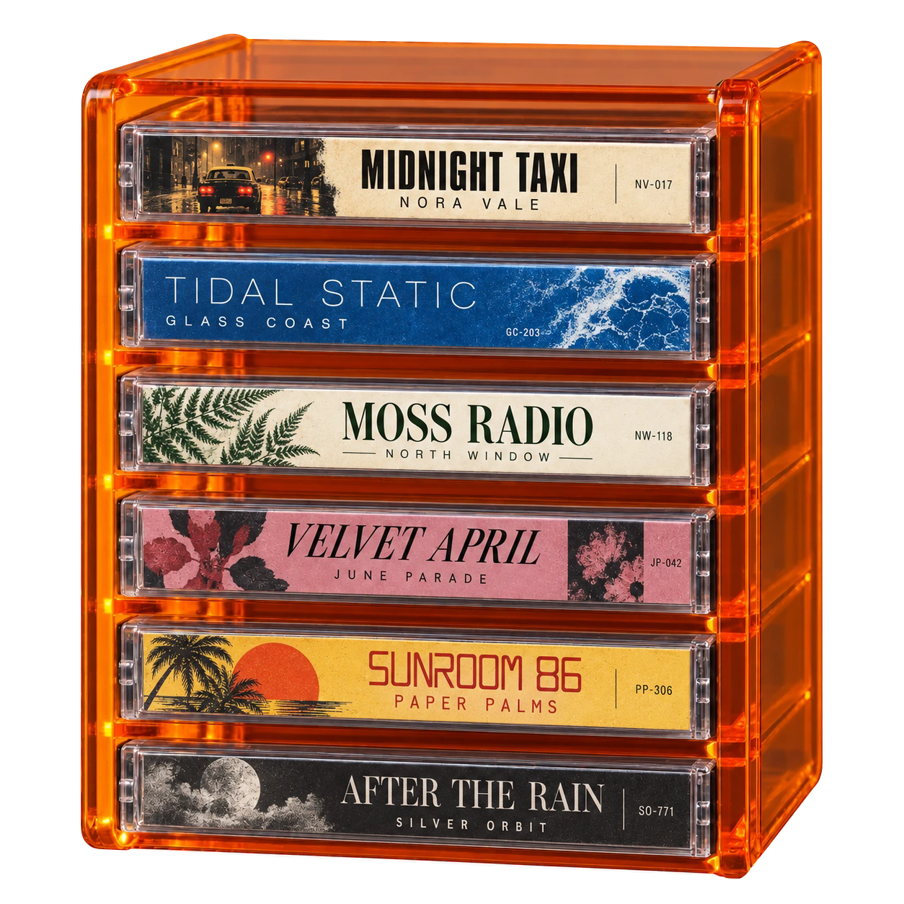

正在准备播放器和磁带架，请稍候

原创演示曲《霓虹夜行》 · 可连接网易云音乐
已经有 6 个磁带架了。先移除一个，再添加新的。
这里还没有磁带。添加音乐 →
仅移除随身听里的列表，不影响音乐平台的歌单和收藏。
网页版支持演示曲与本地音乐。下载完整版本可连接网易云与 Apple Music。
云端歌曲的磁带列表会保存在此浏览器，刷新后自动恢复。本地音频刷新后需重新导入。
本地音频刷新后需重新导入。
外壳配色 · 烟灰
霓虹夜行 · 都会循环版 · 原创演示曲
开始播放会自动收起磁带架与工具面板，听歌中仍可主动展开选曲。换带会自动合盖并播放选中的曲目。上一首 / 下一首直接切歌。默认演示曲《霓虹夜行》约 1 分钟；也可以导入自己的音乐。
正在生成二维码…
我的歌单只显示你创建的歌单；其他歌单请粘贴分享链接。
可播放范围以网易云当前账号为准。试听会单独标注。登录失效后重新扫码即可，已保存的磁带列表会保留。
我的歌单显示你可编辑的个人歌单；其他歌单请粘贴分享链接。我的电台由 Apple Music 连续推荐。
完整播放需要 Apple Music 订阅，并在 Apple 弹窗中授权。连接后使用账号所属地区；可播放内容以账号权限为准。LIKE 与 Apple Music 账号收藏同步。